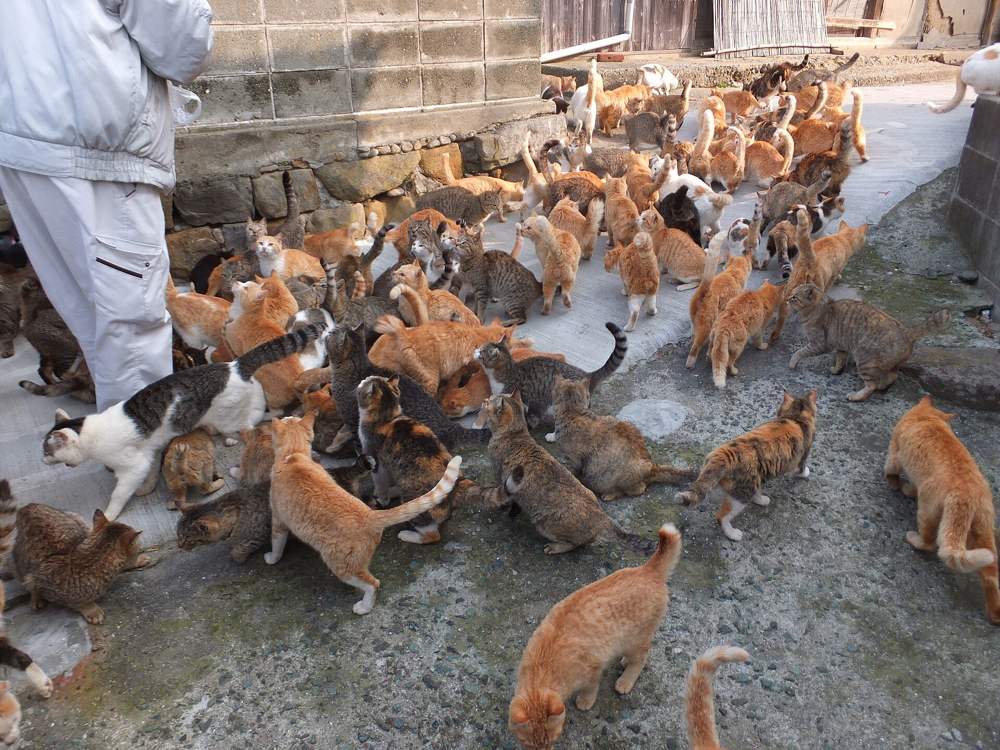
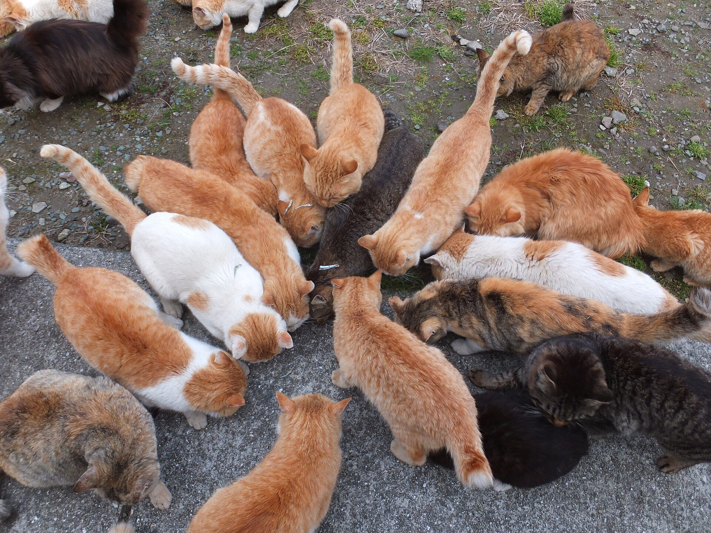
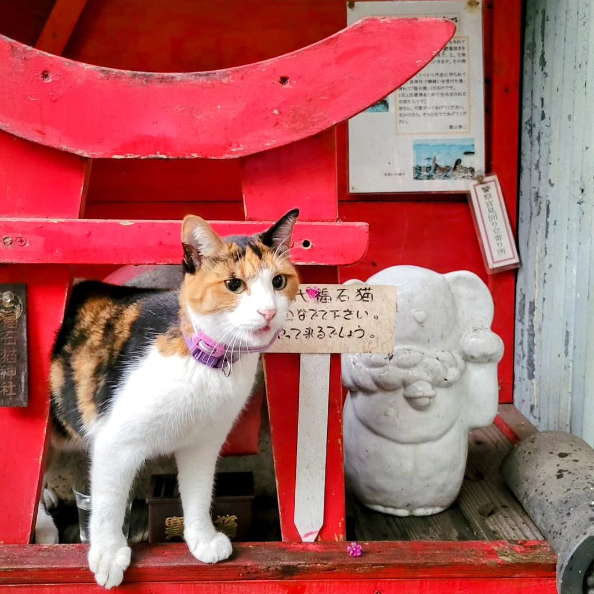
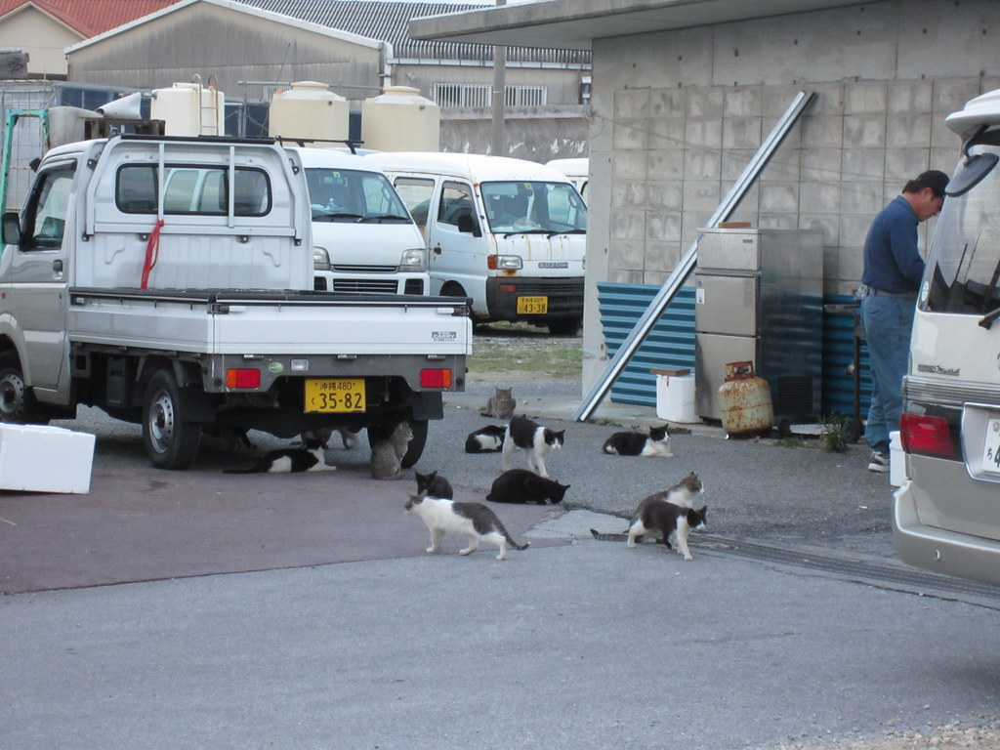

日本の猫島めぐり：田代島・青島・相島の特徴と島に行く前のマナー
公開 2026-11-02・日本ねこ編集部
結論から

猫を
この
3つの猫島 早見表
| 島 | 場所 | 船の | ひとこと |
|---|---|---|---|
| 田代島 | 宮城県石巻市 | 石巻港から | 猫神社の |
| 青島 | 愛媛県大洲市 | 長浜港から | 猫の |
| 相島 | 福岡県新宮町 | 新宮漁港から | 福岡から |
所要時間や
田代島（宮城県）：猫が大漁を呼ぶ守り神の島
石巻港から
人口は
島に
青島（愛媛県）：猫の数がとにかく圧倒的
愛媛県大洲市の

島には
猫が
相島（福岡県）：福岡から日帰りで行ける猫の島
福岡県新宮町の
食べものを
猫島で守りたい5つのマナー
- エサを
あげない。 青島と相島では エサやりは 原則禁止です。 人の 食べものは 猫の 体に 負担に なることもあります。 - 追いかけない・無理に
抱かない。 猫から近づいてくるのを 待ちましょう。 しっぽを 立てて 寄ってくる 猫は あいさつの サインです。 大きく 振っている ときは そっと 距離を とります。 しっぽの 読み方は猫の しっぽの に気持ち完全ガイド まとめています。 - なでるなら
猫が おしりや喜ぶ 場所だけ。 おなかが 苦手な 子は 多いので、 基本は 頭の まわりを 軽くなでます。 くわしくは猫が よろこぶ、 をなで ポイント3つ どうぞ。 - ゴミは
持ち帰る。 島にはゴミ箱が ない 場合も 多いです。 ゴミは 猫にも 島の 人にも 迷惑に なります。 - 島の
ルールと 写真を島の 人を 大切に。 撮る ときは 民家や 人が 写り込まないよう 気を つけましょう。
猫に近づくときの3ステップ
島の
- 立ち止まって
目線を じっと低くする。 見つめず ゆっくりまば たきを 返すと、 猫には 「敵ではないよ」と 伝わりやすいと いわれます。 - 指先のに
おいを 指をかが せる。 そっと 差し出して 猫がに おいを 確かめるのを 待ちます。 顔を 寄せてきたら OKの サインです。 - 嫌がる
そぶりが 耳が見えたら すぐ やめる。 横に 寝る・しっぽを 大きく 振る・体を こわばらせるのは 「もうやめて」の 合図です。
島に行く日の持ちものチェック
- 飲みものと
軽く つまめる 食べもの （島に 売店が ないことがあります） - 帰りの
船の 時刻を メモした もの （スマホの 電池切れに 備えて） - 歩きやすいくつ・帽子・雨具
（舗装されていない 道も あります） - ゴミ袋
（出た ゴミは すべて 持ち帰ります） - 現金
（カード払いが 使えない 場所も あるので 少し 多めに） - ウェットティッシュ
（猫に さわった あとの 手ふきに）
海が
島のほかにも猫に会える街があります
船に

沖縄県宜野湾にも、

島から帰ったら
島の
まとめ
猫島の
猫島で
参考にした情報
- 世界屈指の
猫の （BE-PAL）島 「相島」を 家族で 散策。 福岡から 船で 20分! - 相島の
紹介ページ （ANA Japan Travel Planner） - 田代島の
紹介記事 （JAL ONTRIP） - 田代島を
含む （FUN! JAPAN）猫島の 紹介記事 - 青島
（愛媛県大洲市）の （Precious.jp）紹介記事 - 青島の
訪問記 （gori.me） - 青島の
猫と （JPRIME）TNRの 紹介記事
この
よくある質問
猫島とはどんな島ですか？
島に
猫島で猫にエサをあげてもいいですか？
青島と
犬を連れて行けますか？
田代島では
青島へは日帰りで行けますか？
定期船は